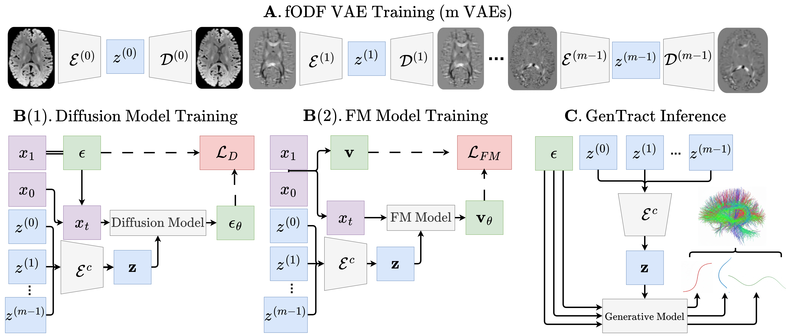

Tractography is the process of inferring the trajectories of white-matter pathways in the brain from diffusion magnetic resonance imaging (dMRI). Local tractography methods, which construct streamlines by following local fiber orientation estimates stepwise through an image, are prone to error accumulation and high false positive rates, particularly on noisy or low-resolution data. In contrast, global methods, which attempt to optimize a collection of streamlines to maximize compatibility with underlying fiber orientation estimates, are computationally expensive. To address these challenges, we introduce GenTract, the first generative model for global tractography. We frame tractography as a generative task, learning a direct mapping from dMRI to complete, anatomically plausible streamlines. We compare both diffusion-based and flow matching paradigms and evaluate GenTract's performance against state-of-the-art baselines. Notably, GenTract achieves precision 1.8× and 2.1× higher than the next-best methods, DDTracking and TractOracle, respectively. This advantage becomes even more pronounced in challenging low-resolution and noisy settings, where it outperforms the closest competitor by a factor of 3.5. By producing tractograms with high precision on research-grade data while also maintaining reliability on imperfect, lower-resolution data, GenTract represents a promising solution for global tractography.
GenTract reframes tractography as a generative task: instead of taking thousands of local stepwise decisions, it generates each entire streamline in one shot, conditioned on the underlying fibre orientation field.

Because a full streamline is produced at once rather than traced step-by-step, GenTract avoids the error accumulation and false positives that plague local tracking — the benefit of global methods, without their heavy optimisation cost.
We study two generative paradigms for the streamline generator — a denoising diffusion model and a flow-matching model — and compare them head-to-head against state-of-the-art tractography baselines.
GenTract sets a new precision bar, with the largest gains exactly where existing methods struggle most — low-resolution and noisy data.
@inproceedings{sargood2026gentract,
title = {GenTract: Generative Global Tractography},
author = {Sargood, Alec and Puglisi, Lemuel and Thompson, Elinor
and Musolesi, Mirco and Alexander, Daniel C.},
booktitle = {Proceedings of the IEEE/CVF Conference on Computer Vision
and Pattern Recognition (CVPR)},
year = {2026}
}